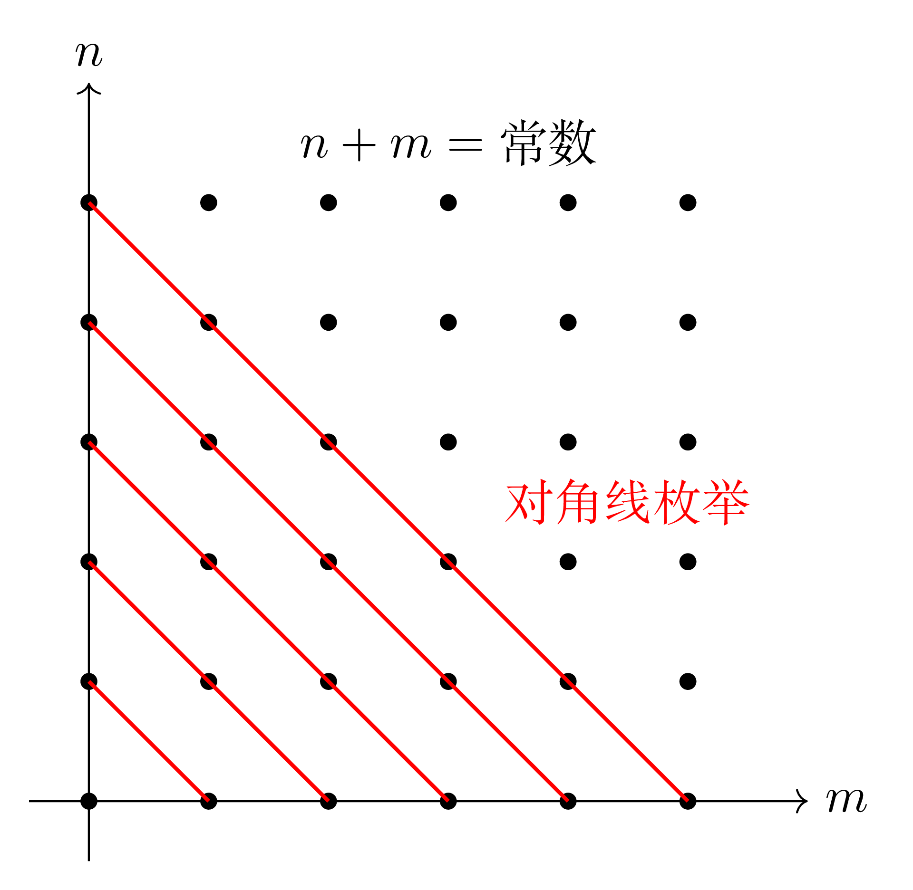

附录
18.2 数域
Definition 18.14. 复数集的一个子集\(K\)如果满足：
\(1\in K\)；
\(a,b\in K\Rightarrow a\pm b,ab\in K\)，\(a,b\in K\)且\(b\ne0\Rightarrow\dfrac{a}{b}\in K\)。
则称\(K\)是一个数域（number filed）。
Theorem 18.3. 任意数域都包含有理数域。
证明. 任取数域\(K\)，由数域的定义可得\(1\in K\)，那么根据数域对其内数加法与减法的封闭性，\(\mathbb{Z}\subseteq K\)。于是任意分数\(\frac{a}{b}\in K,\;b\ne0\)，即\(\mathbb{Q}\subseteq K\)。 ◻
18.3 等价关系
Definition 18.15. 对于任意两个非空集合\(S,M\)，称：
\[\begin{equation*} \{(a,b):a\in S,\;b\in M\} \end{equation*}\]
为集合\(S\)与集合\(M\)的笛卡尔积（Cartesian product），记为\(S\times M\)。其中两个元素\((a_1,b_1)\)与\((a_2,b_2)\)如果满足\(a_1=a_2,\;b_1=b_2\)，则称二者相等，记作\((a_1,b_1)=(a_2,b_2)\)。
Definition 18.16. 设\(S\)是一个非空集合，把\(S\times S\)的一个子集\(W\)叫作\(S\)上的一个二元关系（binary relation）。如果\((a,b)\in W\)，则称\(a\)与\(b\)有\(W\)关系；如果\((a,b)\notin W\)，则称\(a\)与\(b\)没有\(W\)关系。当\(a\)与\(b\)有\(W\)关系时，记作\(aWb\)，或\(a\sim b\)。
Definition 18.17. 集合\(S\)上的一个二元关系\(\sim\)如果具有如下性质：对\(\forall\;a,b,c\in S\)，有：
\(a\sim a\)（反身性）；
\(a\sim b\Rightarrow b\sim a\)（对称性）；
\(a\sim b,\;b\sim c\Rightarrow a\sim c\)（传递性）。
那么称\(\sim\)是集合\(S\)上的一个等价关系（equivalence relationship）。
Definition 18.18. 设\(\sim\)是集合\(S\)上的一个等价关系，\(a\in S\)，令：
\[\begin{equation*} \overline{a}\coloneq\{x\in S:x\sim a\} \end{equation*}\]
称\(\overline{a}\)是由\(a\)确定的等价类（equivalence class），称\(a\)是等价类\(\overline{a}\)的一个代表。
Property 18.3.1. 等价类具有如下基本性质：
\(a\in\overline{a}\)；
\(x\in\overline{a}\Leftrightarrow x\sim a\)；
\(x\sim y\Leftrightarrow\overline{x}=\overline{y}\)。
证明. (1)等价关系具有反身性。(2)由等价类的定义可直接得出。
(3)充分性：因为\(x\in\overline{x}\)且\(\overline{x}=\overline{y}\)，所以\(x\in\overline{y}\)，由\(\overline{y}\)的定义，\(x\sim y\)。
必要性：任取\(a\in\overline{x}\)，则\(a\sim x\)。因为\(x\sim y\)，由等价关系的传递性，\(a\sim y\)，即\(a\in\overline{y}\)。由\(a\)的任意性，\(\overline{x}\subseteq\overline{y}\)。同理可证得\(\overline{y}\subseteq\overline{x}\)，所以\(\overline{x}=\overline{y}\)。 ◻
Corollary 18.1. 用不同代表表示的等价类是一样的，即代表的选择与等价类本身无关。
证明. 由等价类基本性质(3)可直接得到。 ◻
Theorem 18.4. 设\(\sim\)是集合\(S\)上的一个等价关系。对\(\forall\;a,b\in S\)，有\(\overline{a}=\overline{b}\)或\(\overline{a}\cap\overline{b}=\varnothing\)。
证明. 如果\(\overline{a}\ne\overline{b}\)，假设此时\(\overline{a}\cap\overline{b}\ne\varnothing\)，取\(c\in\overline{a}\cap\overline{b}\)，则有\(c\sim a\)且\(c\sim b\)。由等价关系的对称性与传递性可得\(a\sim b\)，根据等价类的基本性质(3)，此时应有\(\overline{a}=\overline{b}\)，矛盾，所以\(\overline{a}\cap\overline{b}=\varnothing\)。 ◻
Definition 18.19. 如果集合\(S\)可以表示为一些非空子集的并集，且这些子集不相交，即：
\[\begin{equation*} \exists\;S_i\subseteq S,\;\underset{i\in I}{\overset{}{\cup}}S_i=S,\;S_i\cap S_j=\varnothing,\;i\ne j,\;i,j\in I \end{equation*}\]
其中\(I\)是指标集。称集合\(\{S_i:i\in I\}\)是\(S\)的一个分割（partition），记作\(\pi(S)\)。
Theorem 18.5. 设\(\sim\)是集合\(S\)上的一个等价关系，则所有等价类组成的集合是\(S\)的一个划分，记作\(\pi_\sim(S)\)。
证明. 对\(\forall\;a_i\in S\)，其中\(i\)是指标集，有\(a_i\in\overline{a_i}\)，于是\(S=\underset{i\in I}{\overset{}{\cup}}\overline{a_i}\)。由定理 18.4可得，若\(i\ne j\)，\(\overline{a_i}\cap\overline{a_j}=\varnothing\)，从而所有等价类组成的集合是\(S\)的一个划分。 ◻
Definition 18.20. 设\(\sim\)是集合\(S\)上的一个等价关系，所有等价类组成的集合称为\(S\)对于关系\(\sim\)的商集（quotient set）。
Definition 18.21. 设\(\sim\)是集合\(S\)上的一个等价关系，一种量或者一种表达式如果对于同一个等价类里的元素是相等的，那么称这种量或表达式是一个不变量；恰好能完全绝对等价类的一组不变量称为完全不变量。
18.4 矩阵
18.4.1 Kronecker乘积
Definition 18.22. 给定两个矩阵 \(A=(a_{ij}) \in M_{m\times n}(K)\) 和 \(B \in M_{p\times q}(K)\)，它们的 Kronecker 乘积 \(A \otimes B\) 是一个大小为 \(mp \times nq\) 的矩阵，定义为：
\[ A \otimes B = \begin{pmatrix} a_{11} B & a_{12} B & \cdots & a_{1n} B \\ a_{21} B & a_{22} B & \cdots & a_{2n} B \\ \vdots & \vdots & \ddots & \vdots \\ a_{m1} B & a_{m2} B & \cdots & a_{mn} B \end{pmatrix} \]
\(a_{ij} B\) 表示矩阵 \(B\) 乘以标量 \(a_{ij},\;i=1,2,\dots,m,\;j=1,2,\dots,n\)。
Property 18.4.1. Kronecker乘积具有如下性质：
\(I_m\otimes I_n=I_{mn}\)；
设\(A\in M_{m\times n}(K),\;B\in M_{p\times q}(K),\;C\in M_{n\times k}(K),\;D\in M_{q\times r}(K)\)，则\((A\otimes B)(C\otimes D)=(AC)\otimes (BD)\)；
设\(A\in M_{m}(K),\;B\in M_{n}(K)\)，则\(A\otimes B\)可逆的充分必要条件为\(A,B\)都可逆，此时有：
\[\begin{equation*} (A\otimes B)^{-1}=A^{-1}\otimes B^{-1} \end{equation*}\]
设\(A=(a_{ij})\in M_{m\times n}(K),\;B=(b_{kl})\in M_{p\times q}(K)\)，则\((A\otimes B)^{\top}=A^{\top}\otimes B^{\top}\)；
证明. (1)由Kronecker乘积的定义：
\[\begin{equation*} I_m\otimes I_n = \begin{pmatrix} I_n & 0 & \cdots & 0 \\ 0 & I_n & \cdots & 0 \\ \vdots & \vdots & \ddots & \vdots \\ 0 & 0 & \cdots & I_n \end{pmatrix}=I_{mn} \end{equation*}\]
(2)由Kronecker乘积的定义：
\[\begin{align*} (A\otimes B)(C\otimes D) &= \begin{pmatrix} a_{11} B & a_{12} B & \cdots & a_{1n} B \\ a_{21} B & a_{22} B & \cdots & a_{2n} B \\ \vdots & \vdots & \ddots & \vdots \\ a_{m1} B & a_{m2} B & \cdots & a_{mn} B \end{pmatrix} \begin{pmatrix} c_{11} D & c_{12} D & \cdots & c_{1k} D \\ c_{21} D & c_{22} D & \cdots & c_{2k} D \\ \vdots & \vdots & \ddots & \vdots \\ c_{n1} D & c_{n2} D & \cdots & c_{nk} D \end{pmatrix} \\ &= \begin{pmatrix} \sum\limits_{i=1}^{n}a_{1i}c_{i1}BD & \sum\limits_{i=1}^{n}a_{1i}c_{i2}BD & \cdots &\sum\limits_{i=1}^{n}a_{1i}c_{ik}BD \\ \sum\limits_{i=1}^{n}a_{2i}c_{i1}BD & \sum\limits_{i=1}^{n}a_{2i}c_{i2}BD & \cdots &\sum\limits_{i=1}^{n}a_{2i}c_{ik}BD \\ \vdots & \vdots & \ddots & \vdots \\ \sum\limits_{i=1}^{n}a_{mi}c_{i1}BD & \sum\limits_{i=1}^{n}a_{mi}c_{i2}BD & \cdots &\sum\limits_{i=1}^{n}a_{mi}c_{ik}BD \\ \end{pmatrix} \\ &=(AC)\otimes (BD) \end{align*}\]
(3)必要性：假设此时\(A\)不可逆，则存在非零向量\(x\)使得\(Ax=\mathbf{0}\)。取非零向量\(y\)，则\((x\otimes y)\)不是一个零向量。由(2)可得：
\[\begin{equation*} (A\otimes B)(x\otimes y)=(Ax)\otimes(By)=\mathbf{0}\otimes(By)=\mathbf{0} \end{equation*}\]
因为\(A\otimes B\)可逆，所以不存在非零向量\(z\)使得\((A\otimes B)z=\mathbf{0}\)，但此时有\((A\otimes B)(x\otimes y)=\mathbf{0}\)，矛盾，所以\(A\)可逆。同理可得\(B\)可逆。
充分性：由(1)(2)可得：
\[\begin{gather*} (A\otimes B)(A^{-1}\otimes B^{-1})=(AA^{-1})\otimes(BB^{-1})=I_m\otimes I_n=I_{mn} \\ (A^{-1}\otimes B^{-1})(A\otimes B)=(A^{-1}A)\otimes(B^{-1}B)=I_m\otimes I_n=I_{mn} \end{gather*}\]
所以\(A\otimes B\)可逆，逆矩阵就是\((A^{-1}\otimes B^{-1})\)。
(4)对任意的\(1\leqslant i\leqslant m,\;1\leqslant j\leqslant n,\;1\leqslant k\leqslant p,\;1\leqslant l\leqslant q\)，元素\(a_{ij}b_{kl}\)在\(A\otimes B\)中的行标为\((i-1)p+k\)，列标为\((j-1)q+l\)。于是\(a_{ij}b_{kl}\)在\((A\otimes B)^{\top}\)中的列标为\((i-1)p+k\)，行标为\((j-1)q+l\)。而\(A^{\top}\otimes B^{\top}\)列标为\((i-1)p+k\)、行标为\((j-1)q+l\)的元素为\(a_{ij}b_{kl}\)，于是\((A\otimes B)^{\top}=A^{\top}\otimes B^{\top}\)。 ◻
18.4.2 向量化算子
Definition 18.23. 设\(A=(a_{ij})\in M_{s\times m}(K)\)，则：
\[\begin{gather*} \operatorname{vec}(A)=(a_{11},a_{21},\dots,a_{s1},a_{12},a_{22},\dots,a_{s2},\dots,a_{1m},a_{2m},\dots,a_{sm})^{\top} \\ \operatorname{rvec}(A)=(a_{11},a_{12},\dots,a_{1m},a_{21},a_{22},\dots,a_{2m},\dots,a_{s1},a_{s2},\dots,a_{sm}) \end{gather*}\]
称\(\operatorname{vec}\)与\(\operatorname{rvec}\)为向量化算子。
18.4.2.1 交换矩阵的定义及其性质
Definition 18.24. 对\(A\in M_{s\times m}(K)\)，存在唯一的\(K_{sm}\in M_{sm\times sm}(K)\)，使得：
\[\begin{equation*} K_{sm}\operatorname{vec}(A)=\operatorname{vec}(A^{\top}) \end{equation*}\]
称\(K_{sm}\)为交换矩阵（commutation matrix）。
18.4.2.2 向量化算子的性质
Property 18.4.2. 向量化算子具有如下性质：
设\(A,B\in M_{s\times m}(K)\)，则\(\forall\;k_1,k_2\in K, \operatorname{vec}(k_1A+k_2B)=k_1\operatorname{vec}(A)+k_2\operatorname{vec}(B)\)，即向量化算子是线性算子；
设\(A,B\in M_{s\times m}(K)\)，则\(\operatorname{tr}(A^{\top}B)=\operatorname{vec}(A)^{\top}\operatorname{vec}(B)\)；
设\(A\in M_{s\times m}(K),\;B\in M_{m\times n}(K),\;C\in M_{n\times p}(K)\)，\(\operatorname{vec}(ABC)=(C^{\top}\otimes A)\operatorname{vec}(B)\)；
证明. (1)是显然的；
(2)因为：
\[\begin{equation*} \operatorname{tr}(A^{\top}B)=\sum_{i=1}^{m}\sum_{j=1}^{s}a_{ji}b_{ji} \end{equation*}\]
所以：
\[\begin{align*} \operatorname{vec}(A)^{\top}\operatorname{vec}(B) &=(a_{11},a_{21},\dots,a_{s1},a_{12},a_{22},\dots,a_{s2},\dots,a_{1m},a_{2m},\dots,a_{sm}) \\ &\quad\cdot(b_{11},b_{21},\dots,b_{s1},b_{12},b_{22},\dots,b_{s2},\dots,b_{1m},b_{2m},\dots,b_{sm})^{\top} \\ &=\sum_{i=1}^{m}\sum_{j=1}^{s}a_{ji}b_{ji} \\ &=\operatorname{tr}(A^{\top}B) \end{align*}\]
(3)设\(B=(B_1,B_2,\dots,B_n),\;C=(C_1,C_2,\dots,C_p)\)，则\(ABC\)的第\(k\)列：
\[\begin{align*} ABC[:,k] &=A(B_1,B_2,\dots,B_n)C_k =A\sum_{i=1}^{n}B_ic_{ik} \\ &=(c_{1k}A,c_{2k}A,\dots,c_{nk}A) \begin{pmatrix} B_1 \\ B_2 \\ \vdots \\ B_n \end{pmatrix} =(C_k^{\top}\otimes A)\operatorname{vec}(B) \end{align*}\]
于是：
\[\begin{align*} \operatorname{vec}(ABC) &= \begin{pmatrix} ABC[:,1] \\ ABC[:,2] \\ \vdots \\ ABC[:,p] \end{pmatrix} = \begin{pmatrix} (C_1^{\top}\otimes A)\operatorname{vec}(B) \\ (C_2^{\top}\otimes A)\operatorname{vec}(B) \\ \vdots \\ (C_p^{\top}\otimes A)\operatorname{vec}(B) \end{pmatrix} \\ &= \begin{pmatrix} C_1^{\top}\otimes A \\ C_2^{\top}\otimes A \\ \vdots \\ C_p^{\top}\otimes A \end{pmatrix} \operatorname{vec}(B) =(C^{\top}\otimes A)\operatorname{vec}(B) \end{align*}\]
◻
18.4.3 平方根阵
Definition 18.25. 设对称阵\(A\in M_n(\mathbb{R})\)，其特征值记为\(\lambda_i,\;i=1,2,\dots,n\)。因为\(A\)是一个实对称阵，由性质 2.6.3(3)可知存在正交矩阵\(Q\)使得\(A=Q^{\top}\operatorname{diag}\{\lambda_1, \lambda_2, \dots, \lambda_{n}\}Q\)。若\(A\geqslant0\)，由定理 2.18(3.5)可知\(\lambda_i\geqslant0,\;i=1,2,\dots,n\)，记：
\[\begin{equation*} \varLambda^{\frac{1}{2}}=\operatorname{diag}\{\lambda_1^{\frac{1}{2}},\lambda_2^{\frac{1}{2}},\dots,\lambda_n^{\frac{1}{2}}\} \end{equation*}\]
称：
\[\begin{equation*} A^{\frac{1}{2}}=Q^{\top}\varLambda^{\frac{1}{2}} Q \end{equation*}\]
为\(A\)的平方根阵。
Property 18.4.3. 设对称阵\(A\in M_n(\mathbb{R})\)且\(A\geqslant0\)，\(A^{\frac{1}{2}}\)具有如下性质：
\((A^{\frac{1}{2}})^2=A\)；
\(A^{\frac{1}{2}}\geqslant0\)；
\(A^{\frac{1}{2}}\)是对称阵；
证明. 由\(A^{\frac{1}{2}}\)的定义，有\(A^{\frac{1}{2}}=Q^{\top}\varLambda^{\frac{1}{2}}Q\)和\(A=Q^{\top}\operatorname{diag}\{\lambda_1, \lambda_2, \dots, \lambda_{n}\}Q\)，其中\(Q\)是一个正交矩阵，\(\varLambda^{\frac{1}{2}}=\operatorname{diag}\{\lambda_1^{\frac{1}{2}},\lambda_2^{\frac{1}{2}},\dots,\lambda_n^{\frac{1}{2}}\}\)，\(\lambda_i,\;i=1,2,\dots,n\)为\(A\)的特征值。
(1)显然：
\[\begin{equation*} (A^{\frac{1}{2}})^2=Q^{\top}\varLambda^{\frac{1}{2}}QQ^{\top}\varLambda^{\frac{1}{2}}Q=Q^{\top}(\varLambda^{\frac{1}{2}})^2Q=Q^{\top}\operatorname{diag}\{\lambda_1, \lambda_2, \dots, \lambda_{n}\}Q=A \end{equation*}\]
(2)因为\(Q\)是正交矩阵，所以\(Q^{\top}=Q^{-1}\)。于是：
\[\begin{equation*} QA^{\frac{1}{2}}Q^{-1}=\varLambda^{\frac{1}{2}} \end{equation*}\]
即\(\lambda_i^{\frac{1}{2}}\)为\(A^{\frac{1}{2}}\)的特征值，而\(\lambda_i\geqslant0\)，由定理 2.18(3.5)可知\(A^{\frac{1}{2}}\geqslant0\)。
(3)显然：
\[\begin{equation*} (A^{\frac{1}{2}})^{\top}=(Q^{\top}\varLambda^{\frac{1}{2}} Q)^{\top}=Q^{\top}(\varLambda^{\frac{1}{2}})^{\top}Q=Q^{\top}\varLambda^{\frac{1}{2}}Q=A^{\frac{1}{2}} \end{equation*}\]
◻
18.4.3.1 平方根阵的逆矩阵
Theorem 18.6. 设对称阵\(A\in M_n(\mathbb{R})\)，其特征值记为\(\lambda_i,\;i=1,2,\dots,n\)。因为\(A\)是一个实对称阵，由性质 2.6.3(3)可知存在正交矩阵\(Q\)使得\(A=Q^{\top}\operatorname{diag}\{\lambda_1, \lambda_2, \dots, \lambda_{n}\}Q\)。若\(A>0\)，由定理 2.17(3.5)可知\(\lambda_i>0,\;i=1,2,\dots,n\)，记：
\[\begin{equation*} \varLambda^{-\frac{1}{2}}=\operatorname{diag}\{\lambda_1^{-\frac{1}{2}},\lambda_2^{-\frac{1}{2}},\dots,\lambda_n^{-\frac{1}{2}}\} \end{equation*}\]
则：
\[\begin{equation*} A^{-\frac{1}{2}}=Q^{\top}\varLambda^{-\frac{1}{2}} Q \end{equation*}\]
是\(A^{\frac{1}{2}}\)的逆矩阵。
证明. 显然：
\[\begin{equation*} A^{\frac{1}{2}}A^{-\frac{1}{2}}=Q^{\top}\operatorname{diag}\{\lambda_1^{\frac{1}{2}},\lambda_2^{\frac{1}{2}},\dots,\lambda_n^{\frac{1}{2}}\}QQ^{\top}\operatorname{diag}\{\lambda_1^{-\frac{1}{2}},\lambda_2^{-\frac{1}{2}},\dots,\lambda_n^{-\frac{1}{2}}\}Q=I \end{equation*}\]
◻
Property 18.4.4. 设对称阵\(A\in M_n(\mathbb{R})\)且\(A>0\)，\(A^{\frac{1}{2}}\)具有如下性质：
\((A^{-\frac{1}{2}})^2=A^{-1}\)；
\(A^{-\frac{1}{2}}>0\)；
\(A^{-\frac{1}{2}}\)是对称阵；
证明. 由\(A^{-\frac{1}{2}}\)的定义，有\(A^{-\frac{1}{2}}=Q^{\top}\varLambda^{-\frac{1}{2}}Q\)和\(A=Q^{\top}\operatorname{diag}\{\lambda_1, \lambda_2, \dots, \lambda_{n}\}Q\)，其中\(Q\)是一个正交矩阵，\(\varLambda^{-\frac{1}{2}}=\operatorname{diag}\{\lambda_1^{-\frac{1}{2}},\lambda_2^{-\frac{1}{2}},\dots,\lambda_n^{-\frac{1}{2}}\}\)，\(\lambda_i,\;i=1,2,\dots,n\)为\(A\)的特征值。
(1)显然：
\[\begin{equation*} (A^{-\frac{1}{2}})^2=Q^{\top}\varLambda^{-\frac{1}{2}}QQ^{\top}\varLambda^{-\frac{1}{2}}Q=Q^{\top}\operatorname{diag}\{\lambda_1^{-1},\lambda_2^{-1},\dots,\lambda_n^{-1}\}Q \end{equation*}\]
而：
\[\begin{align*} A^{-1}&=(Q^{\top}\operatorname{diag}\{\lambda_1, \lambda_2, \dots, \lambda_{n}\}Q)^{-1}=Q^{-1}\operatorname{diag}\{\lambda_1^{-1},\lambda_2^{-1},\dots,\lambda_n^{-1}\}(Q^{\top})^{-1} \\ &=Q^{\top}\operatorname{diag}\{\lambda_1^{-1},\lambda_2^{-1},\dots,\lambda_n^{-1}\}Q \end{align*}\]
所以\((A^{-\frac{1}{2}})^2=A^{-1}\)。
(2)因为\(Q\)是正交矩阵，所以\(Q^{\top}=Q^{-1}\)。于是：
\[\begin{equation*} QA^{-\frac{1}{2}}Q^{-1}=\varLambda^{-\frac{1}{2}} \end{equation*}\]
即\(\lambda_i^{-\frac{1}{2}}\)为\(A^{-\frac{1}{2}}\)的特征值，而\(\lambda_i>0\)，由定理 2.17(3.5)可知\(A^{\frac{1}{2}}>0\)。
(3)显然：
\[\begin{equation*} (A^{-\frac{1}{2}})^{\top}=(Q^{\top}\varLambda^{-\frac{1}{2}} Q)^{\top}=Q^{\top}(\varLambda^{-\frac{1}{2}})^{\top}Q=Q^{\top}\varLambda^{-\frac{1}{2}}Q=A^{-\frac{1}{2}} \end{equation*}\]
◻
18.5 不等式
18.5.1 Cauchy–Schwarz不等式
18.5.1.1 实数域形式
Theorem 18.7. 若\(\{a_i\}_{i=1}^{n},\{b_i\}_{i=1}^{n}\subseteq\mathbb{R}\)，则有如下不等式：
\[\begin{equation*} \tag{1} \left(\sum_{i=1}^na_ib_i\right)^2\leqslant\sum_{i=1}^na_i^2\cdot\sum_{i=1}^nb_i^2 \end{equation*}\]
上式取等当且仅当\(a=(a_1, a_2, \dots, a_{n})^\top\)与\(b=(b_1, b_2, \dots, b_{n})^\top\)线性相关。
证明. 对任意的\(c\in\mathbb{R}^{}\setminus\mathbb{R}^{-}\)，关于\(\lambda\in\mathbb{R}^{}\)的一元二次方程：
\[\begin{equation*} \sum_{i=1}^n\left(a_i+\lambda b_i\right)^2=\lambda^2\sum_{i=1}^nb_i^2+2\lambda\sum_{i=1}^na_ib_i+\sum_{i=1}^na_i^2=c \end{equation*}\]
都有根。由判别式即可得：
\[\begin{equation*} 4\left(\sum_{i=1}^na_ib_i\right)^2\leqslant4\sum_{i=1}^na_i^2\cdot\sum_{i=1}^nb_i^2 \end{equation*}\]
上式取等当且仅当\(c=0\)，即\(\sum\limits_{i=1}^n\left(a_i+\lambda b_i\right)^2=0\)，\(a=(a_1, a_2, \dots, a_{n})^\top\)与\(b=(b_1, b_2, \dots, b_{n})^\top\)线性相关。 ◻
18.5.1.2 复数域形式
Theorem 18.8. 若\(a_i,b_i\in\mathbb{C},i=1,2,\dots,n\)，则有如下不等式：
\[\begin{equation*} \tag{2} \left(\sum_{i=1}^n|a_ib_i|\right)^2\leqslant\sum_{i=1}^n|a_i|^2\cdot\sum_{i=1}^n|b_i|^2 \end{equation*}\]
证明. 由复数模的性质可得到
\[\begin{equation*} |a_ib_i|=|a_i||b_i| \end{equation*}\]
然后使用实数域上的Cauchy不等式即可立即得到结果。 ◻
18.5.1.3 内积形式
Theorem 18.9. 设\(X\)是一个实或复内积空间，\(x,y\in X\)，则有如下不等式：
\[\begin{equation*} \tag{3} |(x,y)|^2\leqslant(x,x)(y,y) \end{equation*}\]
下给出复数域内的证明，实数域的证明显然类似。
证明. 设\(x,y\in X\)。对任意的\(\lambda\in\mathbb{C}\)，有：
\[\begin{equation*} (x+\lambda y,x+\lambda y)\geqslant 0 \end{equation*}\]
即：
\[\begin{equation*} (x,x)+\overline{\lambda}(x,y)+\lambda(y,x)+|\lambda|^2(y,y)\geqslant 0 \end{equation*}\]
令\(\lambda=-\frac{(x,y)}{(y,y)}\)，得到：
\[\begin{gather*} (x,x)-2\frac{|(x,y)|^2}{(y,y)}+\frac{|(x,y)|^2}{(y,y)^2}(y,y)\geqslant0 \\ |(x,y)|^2\leqslant(x,x)(y,y) \end{gather*}\]
◻
18.5.1.4 期望形式
Theorem 18.10. 设\(\operatorname{E}(X^2)<+\infty,\;\operatorname{E}(Y^2)<+\infty\)，则有：
\[\begin{equation*} \tag{4} |\operatorname{E}(XY)|\leqslant\sqrt{\operatorname{E}(X^2)\operatorname{E}(Y^2)} \end{equation*}\]
等号成立的充要条件为存在不全为\(0\)的常数\(a,b\)使得\(aX+bY=0\;\)a.s.成立。
证明. 对任意的常数\(a,b\)，由性质 5.4.2(2)(10)可知二次型：
\[\begin{equation*} \operatorname{E}[(aX+bY)^2]=a^2\operatorname{E}(X^2)+2ab\operatorname{E}(XY)+b^2\operatorname{E}(Y^2)=(a,b)\Sigma(a,b)^{\top}\geqslant0 \end{equation*}\]
其中：
\[\begin{equation*} \Sigma= \begin{pmatrix} \operatorname{E}(X^2) & \operatorname{E}(XY) \\ \operatorname{E}(XY) & \operatorname{E}(Y^2) \end{pmatrix} \end{equation*}\]
行列式这里有问题所以\(\Sigma\)是一个半正定矩阵，由定理 2.18第三条的(6)可知\(|\Sigma|\geqslant0\)，即\(|\operatorname{E}(XY)|\leqslant\sqrt{\operatorname{E}(X^2)\operatorname{E}(Y^2)}\)。等号成立当且仅当\(\Sigma\)退化，当且仅当有不全为\(0\)的常数\(a,b\)使得\(\operatorname{E}[(aX+bY)^2]=0\)（\(\Sigma\)退化时列向量线性相关，存在不全为\(0\)的\(a,b\)使得\(\Sigma(a,b)^{\top}=\mathbf{0}\)，即\((a,b)\Sigma(a,b)^{\top}=0\)；当存在不全为\(0\)的\(a,b\)使得\(\operatorname{E}[(aX+bY)^2]=0\)时，\((a,b)\Sigma(a,b)^{\top}=0\)，需要证明此时一定退化），由性质 5.4.2(9)可知此时当且仅当有不全为\(0\)的常数\(a,b\)使得\(aX+bY=0\;\)a.s.。 ◻
18.5.1.5 Rayleigh商形式
Theorem 18.11. 设\(A\)为\(n\times n\)实正定矩阵，\(a\in\mathbb{R}^n\)，则有：
\[\begin{equation*} \tag{5} \sup_{b\ne\mathbf{0}}\frac{(a^{\top}b)^2}{b^{\top}Ab}=a^{\top}A^{-1}a \end{equation*}\]
证明. 由于\(A\)是正定矩阵，所以存在可逆的\(A^{1/2}\)。令\(x = A^{1/2}b\)，即\(b = A^{-1/2}x\)，则：
\[\begin{align*} \frac{(a^{\top}b)^2}{b^{\top}Ab} &= \frac{(a^{\top} A^{-1/2} x)^2}{x^{\top} x}=\frac{[(A^{-1/2} a)^{\top} x]^2}{\|x\|^2} \end{align*}\]
记\(u = A^{-1/2}a\)，由不等式 3有：
\[\begin{equation*} |(u,x)|^2 \leqslant \|u\|^2 \cdot \|x\|^2 \end{equation*}\]
于是：
\[\begin{equation*} \frac{[(A^{-1/2} a)^{\top} x]^2}{\|x\|^2} \leqslant \|A^{-1/2}a\|^2 = (A^{-1/2}a)^{\top} (A^{-1/2}a) = a^{\top} A^{-1} a \end{equation*}\]
即：
\[\begin{equation*} \sup_{b\ne\mathbf{0}}\frac{(a^{\top}b)^2}{b^{\top}Ab}=a^{\top}A^{-1}a \end{equation*}\]
◻
18.5.2 Young’s不等式
Theorem 18.12. 设\(a,b\in\mathbb{R}\)且\(a,b>0\)，\(p,q\in\mathbb{R}\)且\(p,q>1\)，满足\(\frac{1}{p}+\frac{1}{q}=1\)，则有如下不等式：
\[\begin{equation*} \tag{6} ab\leqslant\frac{a^p}{p}+\frac{b^q}{q} \end{equation*}\]
等号成立当且仅当\(a^p=b^q\)。
证明. \(f(x)=e^x\)是一个凸函数，因此对任意的\(t\in(0,1)\)：
\[\begin{equation*} e^{tx+(1-t)y}\leqslant te^x+(1-t)e^y \end{equation*}\]
等号成立当且仅当\(x=y\)。令\(\frac{1}{p}=t\)，利用上式则有：
\[\begin{equation*} ab=e^{\ln(a)+\ln(b)}=e^{\frac{\ln(a^p)}{p}+\frac{\ln(b^q)}{q}}\leqslant\frac{1}{p}e^{\ln(a^p)}+\frac{1}{q}e^{\ln(b^q)}=\frac{a^p}{p}+\frac{b^q}{q} \end{equation*}\]
因为对数函数单调增，所以等号成立当且仅当\(a^p=b^q\)。 ◻
18.5.3 Holder不等式
18.5.3.1 离散形式
Theorem 18.13. 设\(\xi_i,\eta_i,i=1,2,\dots,n\)同为实数或复数，\(1<p,q<+\infty\)，满足\(\frac{1}{p}+\frac{1}{q}=1\)，则有如下不等式：
\[\begin{equation*} \tag{7} \sum_{i=1}^n|\xi_i\eta_i|\leqslant\left(\sum_{i=1}^n|\xi_i|^p\right)^\frac{1}{p}\cdot\left(\sum_{i=1}^n|\eta_i|^q\right)^\frac{1}{q} \end{equation*}\]
证明. 在Young’s不等式（即不等式 6）中取：
\[\begin{equation*} a=\frac{|\xi_i|}{\left(\sum\limits_{i=1}^n|\xi_i|^p\right)^\frac{1}{p}},\quad b=\frac{|\eta_i|}{\left(\sum\limits_{i=1}^n|\eta_i|^q\right)^\frac{1}{q}} \end{equation*}\]
即有：
\[\begin{gather*} \frac{|\xi_i||\eta_i|}{\left(\sum\limits_{i=1}^n|\xi_i|^p\right)^\frac{1}{p}\cdot\left(\sum\limits_{i=1}^n|\eta_i|^q\right)^\frac{1}{q}} \leqslant\frac{|\xi_i|^p}{p\left(\sum\limits_{i=1}^n|\xi_i|^p\right)}+\frac{|\eta_i|^q}{q\left(\sum\limits_{i=1}^n|\eta_i|^q\right)} \\ \frac{\sum\limits_{i=1}^n|\xi_i\eta_i|}{\left(\sum\limits_{i=1}^n|\xi_i|^p\right)^\frac{1}{p}\cdot\left(\sum\limits_{i=1}^n|\eta_i|^q\right)^\frac{1}{q}} \leqslant\frac{\sum\limits_{i=1}^n|\xi_i|^p}{p\left(\sum\limits_{i=1}^n|\xi_i|^p\right)}+\frac{\sum\limits_{i=1}^n|\eta_i|^q}{q\left(\sum\limits_{i=1}^n|\eta_i|^q\right)}\leqslant\frac{1}{p}+\frac{1}{q}=1 \end{gather*}\]
◻
Theorem 18.14. 设\(\xi_i,\eta_i,i\in\mathbb{N}^+\)同为实数或复数，\(1<p,q<+\infty\)，满足\(\frac{1}{p}+\frac{1}{q}=1\)，则有如下不等式：
\[\begin{equation*} \tag{8} \sum_{i=1}^{+\infty}|\xi_i\eta_i|\leqslant\left(\sum_{i=1}^{+\infty}|\xi_i|^p\right)^\frac{1}{p}\cdot\left(\sum_{i=1}^{+\infty}|\eta_i|^q\right)^\frac{1}{q} \end{equation*}\]
证明. 证明过程与有穷级数几乎一样，只是把求和中的\(n\)改为\(+\infty\)的区别。 ◻
18.5.3.2 积分形式
Theorem 18.15. 设 \((X,\mathscr{F},\mu)\)是一个测度空间，\(E\in\mathscr{F}\)，\(1<p,q<+\infty\)，满足\(\frac{1}{p}+\frac{1}{q}=1\)，\(f\in L_p(E),\;g\in L_q(E)\)，则有如下不等式：
\[\begin{equation*} \tag{9} \int_{E}^{}|f(x)g(x)|\mathop{}\!\mathrm{d}\mu\leqslant\left[\int_{E}^{}|f(x)|^p\mathop{}\!\mathrm{d}\mu\right]^{\frac{1}{p}}\left[\int_{E}^{}|g(x)|^q\mathop{}\!\mathrm{d}\mu\right]^{\frac{1}{q}} \end{equation*}\]
等号成立当且仅当存在不全为\(0\)的\(\alpha,\beta\geqslant0\)使得：
\[\begin{equation*} \alpha|f|^p=\beta|g|^q\;\text{a.e.于$E$} \end{equation*}\]
证明. (1)\(\;f(x)=0\)和\(g(x)=0\;\)都不a.e.于\(E\)：在Young’s不等式（即不等式 6）中取：
\[\begin{equation*} a=\frac{|f(x)|}{\left[\int_{E}^{}|f(x)|^p\mathop{}\!\mathrm{d}\mu\right]^\frac{1}{p}},\quad b=\frac{|g(x)|}{\left[\int_{E}^{}|g(x)|^q\mathop{}\!\mathrm{d}\mu\right]^\frac{1}{q}} \end{equation*}\]
即有：
\[\begin{equation*} \frac{|f(x)||g(x)|}{\left[\int_{E}^{}|f(x)|^p\mathop{}\!\mathrm{d}\mu\right]^\frac{1}{p}\cdot\left[\int_{E}^{}|g(x)|^q\mathop{}\!\mathrm{d}\mu\right]^\frac{1}{q}} \leqslant\frac{|f(x)|^p}{p\left[\int_{E}^{}|f(x)|^p\mathop{}\!\mathrm{d}\mu\right]}+\frac{|g(x)|^q}{q\left[\int_{E}^{}|g(x)|^q\mathop{}\!\mathrm{d}\mu\right]} \end{equation*}\]
两边进行积分可得：
\[\begin{gather*} \int_{E}\frac{|f(x)g(x)|}{\left[\int_{E}^{}|f(x)|^p\mathop{}\!\mathrm{d}\mu\right]^\frac{1}{p}\cdot\left[\int_{E}^{}|g(x)|^q\mathop{}\!\mathrm{d}\mu\right]^\frac{1}{q}}\mathop{}\!\mathrm{d}\mu\leqslant\frac{1}{p}+\frac{1}{q} \\ \int_{E}|f(x)g(x)|\mathop{}\!\mathrm{d}\mu\leqslant\left(\frac{1}{p}+\frac{1}{q}\right)\left[\int_{E}^{}|f(x)|^p\mathop{}\!\mathrm{d}\mu\right]^\frac{1}{p}\cdot\left[\int_{E}^{}|g(x)|^q\mathop{}\!\mathrm{d}\mu\right]^\frac{1}{q} \\ \int_{E}|f(x)g(x)|\mathop{}\!\mathrm{d}\mu\leqslant\left[\int_{E}^{}|f(x)|^p\mathop{}\!\mathrm{d}\mu\right]^\frac{1}{p}\cdot\left[\int_{E}^{}|g(x)|^q\mathop{}\!\mathrm{d}\mu\right]^\frac{1}{q} \end{gather*}\]
由Young’s不等式可知等号成立当且仅当：
\[\begin{gather*} \frac{|f(x)|^p}{\int_{E}^{}|f(x)|^p\mathop{}\!\mathrm{d}\mu}=\frac{|g(x)|^q}{\int_{E}^{}|g(x)|^q\mathop{}\!\mathrm{d}\mu} \\ |f(x)|^p\int_{E}^{}|g(x)|^q\mathop{}\!\mathrm{d}\mu=|g(x)|^q\int_{E}^{}|f(x)|^p\mathop{}\!\mathrm{d}\mu \end{gather*}\]
但使用Young’s不等式接下来的是积分的操作，我们只需要积分保持不等号即可，所以由性质 5.4.2(6)可知Young’s不等式得到的那个不等式只要a.e.成立即可，即上式只要a.e.成立即可。
(2)\(\;f(x)=0\)或\(g(x)=0\;\)a.e.于\(E\)：\(|f(x)g(x)|=0\;\)a.e.于\(E\)，由性质 5.4.2(9)可得\(\int_{E}|f(x)g(x)|\mathop{}\!\mathrm{d}\mu=0\)，再根据性质 5.4.2(2)可得\(\int_{A}|f(x)|^p\mathop{}\!\mathrm{d}\mu,\int_{E}|g(x)|^q\mathop{}\!\mathrm{d}\mu\geqslant0\)，于是不等式成立。
以上两种情况都可以推导出存在不全为\(0\)的\(\alpha,\beta\geqslant0\)使得：
\[\begin{equation*} \alpha|f|^p=\beta|g|^q\;\text{a.e.于$E$} \end{equation*}\]
即等号成立时上式也成立，下面证明反过来也对。当上不等式成立时，进行分类讨论。
(1)\(\;f(x)=0\)或\(g(x)=0\;\)a.e.于\(E\)：仅对\(|f(x)|=0\;\)a.e.于\(E\)的情况进行证明，\(g(x)=0\;\)a.e.于\(E\)的情况可对称得到。此时\(|f(x)|^p=0\)和\(|f(x)g(x)|\)都a.e.于\(E\)，于是由性质 5.4.2(9)可得：
\[\begin{equation*} \int_{E}|f(x)g(x)|\mathop{}\!\mathrm{d}\mu=0,\;\int_{E}|f(x)|^p\mathop{}\!\mathrm{d}\mu=0 \end{equation*}\]
所以：
\[\begin{equation*} \int_{E}^{}|f(x)g(x)|\mathop{}\!\mathrm{d}\mu=\left[\int_{E}^{}|f(x)|^p\mathop{}\!\mathrm{d}\mu\right]^{\frac{1}{p}}\left[\int_{E}^{}|g(x)|^q\mathop{}\!\mathrm{d}\mu\right]^{\frac{1}{q}}=0 \end{equation*}\]
(2)\(\;f(x)=0\)和\(g(x)=0\;\)都不a.e.于\(E\)：设\(\alpha\ne0\)，对\(\beta\ne0\)的情况可对称得到。此时有：
\[\begin{equation*} |f|^p=\frac{\beta}{\alpha}|g|^q\;\text{a.e.于$E$} \end{equation*}\]
所以：
\[\begin{equation*} |f(x)g(x)|=|f(x)||g(x)|=\left(\frac{\beta}{\alpha}\right)^{-p}|g(x)|^{\frac{q}{p}+1} \end{equation*}\]
因为\(\dfrac{1}{p}+\dfrac{1}{q}=1\)，所以\(\dfrac{q}{p}+1=q\)，于是由性质 5.4.2(10)可得：
\[\begin{equation*} \int_{E}|f(x)g(x)|\mathop{}\!\mathrm{d}\mu=\int_{E}\left(\frac{\beta}{\alpha}\right)^{-p}|g(x)|^{q}\mathop{}\!\mathrm{d}\mu=\left(\frac{\beta}{\alpha}\right)^{-p}\int_{E}|g(x)|^q\mathop{}\!\mathrm{d}\mu \end{equation*}\]
对\(\alpha|f|^p=\beta|g|^q\)两边积分，由性质 5.4.2(7)(10)可得：
\[\begin{gather*} \int_{E}\alpha|f(x)|^p\mathop{}\!\mathrm{d}\mu=\int_{E}\beta |g(x)|^q\mathop{}\!\mathrm{d}\mu \\ \alpha\int_{E}|f(x)|^p\mathop{}\!\mathrm{d}\mu=\beta\int_{E}|g(x)|^q\mathop{}\!\mathrm{d}\mu \\ \frac{\int_{E}|f(x)|^p\mathop{}\!\mathrm{d}\mu}{\int_{E}|g(x)|^q\mathop{}\!\mathrm{d}\mu}=\frac{\beta}{\alpha} \\ \left[\frac{\int_{E}|f(x)|^p\mathop{}\!\mathrm{d}\mu}{\int_{E}|g(x)|^q\mathop{}\!\mathrm{d}\mu}\right]^{-p}=\left(\frac{\beta}{\alpha}\right)^{-p} \end{gather*}\]
将其代入到之前的式子可得：
\[\begin{align*} \int_{E}|f(x)g(x)|\mathop{}\!\mathrm{d}\mu&=\left(\frac{\beta}{\alpha}\right)^{-p}\int_{E}|g(x)|^q\mathop{}\!\mathrm{d}\mu \\ &=\left[\frac{\int_{E}|f(x)|^p\mathop{}\!\mathrm{d}\mu}{\int_{E}|g(x)|^q\mathop{}\!\mathrm{d}\mu}\right]^{-p}\int_{E}|g(x)|^q\mathop{}\!\mathrm{d}\mu \\ &=\left[\int_{E}|f(x)|^p\mathop{}\!\mathrm{d}\mu\right]^{\frac{1}{p}}\left[\int_{E}|g(x)|^q\mathop{}\!\mathrm{d}\mu\right]^{\frac{1}{q}} \end{align*}\]
◻
Theorem 18.16. 设 \((X,\mathscr{F},\mu)\)是一个测度空间，\(E\in\mathscr{F}\)，\(1<p,q<+\infty\)，满足\(\frac{1}{p}+\frac{1}{q}=1\)。对任意的\(f\in L_p(E),\;g\in L_q(E),\;h\in L_1(E)\)，在\(L_1(E),L_p(E)\)和\(L_q(E)\)中引入范数：
\[\begin{equation*} ||f||_p=\left[\int_{E}^{}|f(x)|^p\mathop{}\!\mathrm{d}\mu\right]^\frac{1}{p},\;||g||_q=\left[\int_{E}|g(x)|^q\mathop{}\!\mathrm{d}\mu\right]^{\frac{1}{q}},\;||h||_1=\int_{E}|h(x)|\mathop{}\!\mathrm{d}\mu \end{equation*}\]
则积分形式的Holder不等式可写为：
\[\begin{equation*} \tag{10} ||fg||_1\leqslant||f||_p\;||g||_q \end{equation*}\]
其中\(fg\in L_1(E)\)由\(f\in L_p(E),g\in L_q(E)\)以及积分形式的Holder不等式保证。
note 18.4. 范数是对于空间内的元素定义的，所以写范数的时候首先要保证元素在这个空间内，这里做的其实是一个假设并验证的过程，假设在空间内，然后计算，由结果发现确实是在空间内的。
Theorem 18.17. 设 \((X,\mathscr{F},\mu)\)是一个测度空间，\(E\in\mathscr{F}\)。对任意的\(f\in L_1(E),\;g\in L_{\infty}(E)\)，在\(L_{\infty}(E)\)和\(L_1(E)\)中分别定义范数为元素的无穷范数和：
\[\begin{equation*} ||f||_1=\int_{E}|f(x)|\mathop{}\!\mathrm{d}\mu \end{equation*}\]
则有：
\[\begin{equation*} \tag{11} ||fg||_1\leqslant||f||_1\;||g||_{\infty} \end{equation*}\]
证明. 由性质 5.4.2(7)(10)和无穷范数的定义可得：
\[\begin{equation*} ||fg||_1=\int_{E}|f(x)g(x)|\mathop{}\!\mathrm{d}\mu\leqslant\int_{E}|f(x)|\;||g||_{\infty}\mathop{}\!\mathrm{d}\mu=||g||_{\infty}\int_{E}|f(x)|\mathop{}\!\mathrm{d}\mu=||f||_1\;||g||_{\infty} \end{equation*}\]
其中\(fg\in L_1(E)\)由\(f\in L_1(E),g\in L_{\infty}(E)\)以及上式保证。 ◻
18.5.4 Minkowski不等式
18.5.4.1 离散形式
Theorem 18.18. 设\(\xi_i,\eta_i,i=1,2,\dots,n\)同为实数或复数，\(1\geqslant p<+\infty\)，则有如下不等式：
\[\begin{equation*} \tag{12} \left(\sum_{i=1}^n|\xi_i+\eta_i|^p\right)^\frac{1}{p}\leqslant\left(\sum_{i=1}^n|\xi_i|^p\right)^\frac{1}{p}+\left(\sum_{i=1}^n|\eta_i|^p\right)^\frac{1}{p} \end{equation*}\]
证明. 当\(p=1\)时结论显然成立。当\(p>1\)时，取\(p,q\in\mathbb{R}\)且\(p,q>1\)，满足\(\frac{1}{p}+\frac{1}{q}=1\)，由Holder不等式（即不等式 7）：
\[\begin{gather*} \sum_{i=1}^n|\xi_i||\xi_i+\eta_i|^\frac{p}{q}\leqslant\left(\sum_{i=1}^n|\xi_i|^p\right)^\frac{1}{p}\cdot\left(\sum_{i=1}^n|\xi_i+\eta_i|^p\right)^\frac{1}{q} \\ \sum_{i=1}^n|\eta_i||\xi_i+\eta_i|^\frac{p}{q}\leqslant\left(\sum_{i=1}^n|\eta_i|^p\right)^\frac{1}{p}\cdot\left(\sum_{i=1}^n|\xi_i+\eta_i|^p\right)^\frac{1}{q} \end{gather*}\]
因此：
\[\begin{align*} \sum_{i=1}^n|\xi_i+\eta_i|^p&=\sum_{i=1}^n\left[|\xi_i+\eta_i|\;|\xi_i+\eta_i|^{p-1}\right] \\ &\leqslant\sum_{i=1}^n\left[(|\xi_i|+|\eta_i|)|\xi_i+\eta_i|^\frac{p}{q}\right] \\ &=\sum_{i=1}^n|\xi_i||\xi_i+\eta_i|^\frac{p}{q}+\sum_{i=1}^n|\eta_i||\xi_i+\eta_i|^\frac{p}{q} \\ &\leqslant\left[\left(\sum_{i=1}^n|\xi_i|^p\right)^\frac{1}{p}+\left(\sum_{i=1}^n|\eta_i|^p\right)^\frac{1}{p}\right]\cdot\left(\sum_{i=1}^n|\xi_i+\eta_i|^p\right)^\frac{1}{q} \end{align*}\]
上式第一行到第二行需要注意到\(p-1=\frac{p}{q}\)。两边同除\(\left(\sum\limits_{i=1}^n|\xi_i+\eta_i|^p\right)^\frac{1}{q}\)（若其为\(0\)则结论显然也成立）即有：
\[\begin{equation*} \left(\sum_{i=1}^n|\xi_i+\eta_i|^p\right)^\frac{1}{p}\leqslant\left(\sum_{i=1}^n|\xi_i|^p\right)^\frac{1}{p}+\left(\sum_{i=1}^n|\eta_i|^p\right)^\frac{1}{p} \end{equation*}\]
◻
设\(\xi_i,\eta_i,i=1,2,\dots,n\)同为实数或复数，\(1\geqslant p<+\infty\)，则有如下不等式：
\[\begin{equation*} \tag{13} \left(\sum_{i=1}^{+\infty}|\xi_i+\eta_i|^p\right)^\frac{1}{p}\leqslant\left(\sum_{i=1}^{+\infty}|\xi_i|^p\right)^\frac{1}{p}+\left(\sum_{i=1}^{+\infty}|\eta_i|^p\right)^\frac{1}{p} \end{equation*}\]
证明. 证明过程与有穷级数几乎一样，只是把求和中的\(n\)改为\(+\infty\)的区别。 ◻
18.5.4.2 积分形式
Theorem 18.19. 设 \((X,\mathscr{F},\mu)\)是一个测度空间，\(1\leqslant p<+\infty\)，\(E\in\mathscr{F}\)，\(f,g\in L_p(E)\)，则有如下不等式：
\[\begin{equation*} \tag{14} \left[\int_{E}^{}|f(x)+g(x)|^p\mathop{}\!\mathrm{d}\mu\right]^\frac{1}{p}\leqslant\left[\int_{E}^{}|f(x)|^p\mathop{}\!\mathrm{d}\mu\right]^\frac{1}{p}+\left[\int_{E}^{}|g(x)|^p\mathop{}\!\mathrm{d}\mu\right]^\frac{1}{p} \end{equation*}\]
且：
\(p=1\)时等号成立当且仅当\(fg\geqslant0\;\)a.e.于\(E\)；
\(p>1\)时等号成立当且仅当存在不全为\(0\)的\(\alpha,\beta\geqslant0\)使得\(\alpha f=\beta g\)。
证明. (1)\(\;p=1\)：由绝对值的三角不等式以及性质 5.4.2(10)直接可得。等号成立当且仅当\(f(x)g(x)\geqslant0\)，考虑到性质 5.4.2(7)，只要\(f(x)g(x)\geqslant0\;\)a.e.于\(E\)即可。
(2)\(\;p>1\)：当\(|f(x)+g(x)|=0\;\)a.e.于\(E\)时，由性质 5.4.2(9)可知\(\left[\int_{E}^{}|f(x)+g(x)|^p\mathop{}\!\mathrm{d}\mu\right]^\frac{1}{p}=0\)，根据性质 5.4.2(2)可得结论成立。此时由性质 5.4.2(2)(9)可知等号成立当且仅当\(f=0\;\)a.e.于\(E\)且\(g=0\;\)a.e.于\(E\)，该条件可推出存在不全为\(0\)的\(\alpha,\beta\geqslant0\)使得\(\alpha f=\beta g\;\)a.e.于\(E\)。
当\(|f(x)+g(x)|=0\;\)不a.e.于\(E\)时，取\(q\in\mathbb{R}\)且\(q>1\)，满足\(\frac{1}{p}+\frac{1}{q}=1\)，由Holder不等式（即不等式 9）：
\[\begin{gather*} \int_{E}^{}|f(x)|\;|f(x)+g(x)|^\frac{p}{q}\mathop{}\!\mathrm{d}\mu\leqslant\left[\int_{E}^{}|f(x)|^p\mathop{}\!\mathrm{d}\mu\right]^\frac{1}{p}\left[\int_{E}^{}|f(x)+g(x)|^p\mathop{}\!\mathrm{d}\mu\right]^\frac{1}{q} \\ \int_{E}^{}|g(x)|\;|f(x)+g(x)|^\frac{p}{q}\mathop{}\!\mathrm{d}\mu\leqslant\left[\int_{E}^{}|g(x)|^p\mathop{}\!\mathrm{d}\mu\right]^\frac{1}{p}\left[\int_{E}^{}|f(x)+g(x)|^p\mathop{}\!\mathrm{d}\mu\right]^\frac{1}{q} \end{gather*}\]
注意到\(p+q=pq\)，所以\(q(p-1)=qp-q=p\)，因此由绝对值的三角不等式以及性质 5.4.2(10)可得：
\[\begin{align*} \int_{E}^{}|f(x)+g(x)|^p\mathop{}\!\mathrm{d}\mu &=\int_{E}^{}|f(x)+g(x)|\;|f(x)+g(x)|^{p-1}\mathop{}\!\mathrm{d}\mu \\ &\leqslant\int_{E}^{}\Bigl[|f(x)|+|g(x)|\Bigr]\;|f(x)+g(x)|^{p-1}\mathop{}\!\mathrm{d}\mu \\ &=\int_{E}^{}|f(x)|\;|f(x)+g(x)|^{p-1}\mathop{}\!\mathrm{d}\mu+\int_{E}^{}|g(x)|\;|f(x)+g(x)|^{p-1}\mathop{}\!\mathrm{d}\mu \\ &\leqslant\left\{\left[\int_{E}^{}|f(x)|^p\mathop{}\!\mathrm{d}\mu\right]^\frac{1}{p}+\left[\int_{E}^{}|g(x)|^p\mathop{}\!\mathrm{d}\mu\right]^\frac{1}{p}\right\}\left[\int_{E}^{}|f(x)+g(x)|^p\mathop{}\!\mathrm{d}\mu\right]^\frac{1}{q} \end{align*}\]
两边同除\(\left[\int_{E}^{}|f(x)+g(x)|^p\mathop{}\!\mathrm{d}\mu\right]^\frac{1}{q}\)即有：
\[\begin{equation*} \left[\int_{E}^{}|f(x)+g(x)|^p\mathop{}\!\mathrm{d}\mu\right]^\frac{1}{p}\leqslant\left[\int_{E}^{}|f(x)|^p\mathop{}\!\mathrm{d}\mu\right]^\frac{1}{p}+\left[\int_{E}^{}|g(x)|^p\mathop{}\!\mathrm{d}\mu\right]^\frac{1}{p} \end{equation*}\]
由放缩的过程注意到等号成立当且仅当Holder不等式取等且\(f(x)g(x)\geqslant0\;\)a.e.于\(E\)，而Holder不等式取等当且仅当存在不全为\(0\)的\(\alpha,\beta\geqslant0\)和不全为\(0\)的\(\gamma,\delta\geqslant0\)使得：
\[\begin{equation*} \alpha|f|^p=\beta|f+g|^p,\;\gamma|g|^p=\delta|f+g|^p\;\text{a.e.于$E$} \end{equation*}\]
因为此时\(f(x),g(x)\)同号a.e.于\(E\)，所以也即存在不全为\(0\)的\(\alpha,\beta\geqslant0\)和不全为\(0\)的\(\gamma,\delta\geqslant0\)使得：
\[\begin{equation*} \alpha f=\beta (f+g),\;\gamma g=\delta(f+g)\;\text{a.e.于$E$} \end{equation*}\]
该条件可推出存在不全为\(0\)的\(\alpha,\beta\geqslant0\)使得\(\alpha f=\beta g\;\)a.e.于\(E\)。
接下来证明存在不全为\(0\)的\(\alpha,\beta\geqslant0\)使得\(\alpha f=\beta g\;\)a.e.于\(E\)也可推出等式成立。仅对\(\alpha\ne0\)的情况进行证明，\(\beta\ne0\)的情况可对称得到。
(1)\(\;|f(x)+g(x)|=0\;\)a.e.于\(E\)：此时可得到\(g=0\;\)a.e.于\(E\)，进而得到\(f=0\;\)a.e.成立。由性质 5.4.2(9)可得：
\[\begin{equation*} \left[\int_{E}^{}|f(x)+g(x)|^p\mathop{}\!\mathrm{d}\mu\right]^\frac{1}{p}=\left[\int_{E}^{}|f(x)|^p\mathop{}\!\mathrm{d}\mu\right]^\frac{1}{p}+\left[\int_{E}^{}|g(x)|^p\mathop{}\!\mathrm{d}\mu\right]^\frac{1}{p}=0 \end{equation*}\]
(2)\(\;|f(x)+g(x)|=0\)不a.e.于\(E\)：此时可得到：
\[\begin{equation*} f=\frac{\beta}{\alpha}g\;\text{a.e.于$E$} \end{equation*}\]
于是由性质 5.4.2(10)(7)可得：
\[\begin{align*} \left[\int_{E}^{}|f(x)+g(x)|^p\mathop{}\!\mathrm{d}\mu\right]^{\frac{1}{p}}&=\left[\int_{E}^{}\left|\frac{\beta+\alpha}{\alpha}g(x)\right|^p\mathop{}\!\mathrm{d}\mu\right]^\frac{1}{p} \\ &=\frac{\beta+\alpha}{\alpha}\left[\int_{E}^{}|g(x)|^p\mathop{}\!\mathrm{d}\mu\right]^\frac{1}{p} \\ &=\frac{\beta}{\alpha}\left[\int_{E}^{}|g(x)|^p\mathop{}\!\mathrm{d}\mu\right]^\frac{1}{p}+\left[\int_{E}^{}|g(x)|^p\mathop{}\!\mathrm{d}\mu\right]^\frac{1}{p} \\ &=\left[\int_{E}\left|\frac{\beta}{\alpha}g(x)\right|^p\mathop{}\!\mathrm{d}\mu\right]^{\frac{1}{p}}+\left[\int_{E}^{}|g(x)|^p\mathop{}\!\mathrm{d}\mu\right]^\frac{1}{p} \\ &=\left[\int_{E}^{}|f(x)|^p\mathop{}\!\mathrm{d}\mu\right]^\frac{1}{p}+\left[\int_{E}^{}|g(x)|^p\mathop{}\!\mathrm{d}\mu\right]^\frac{1}{p} \end{align*}\]
◻
Theorem 18.20. 设 \((X,\mathscr{F},\mu)\)是一个测度空间，\(1\leqslant p<+\infty\)，\(E\in\mathscr{F}\)。对任意的\(f,g\in L_p(E)\)，在\(L_p(E)\)空间中引入范数：
\[\begin{equation*} ||f||_p=\left[\int_{E}^{}|f(x)|^p\mathop{}\!\mathrm{d}\mu\right]^\frac{1}{p} \end{equation*}\]
则积分形式的Minkowski不等式可写为：
\[\begin{equation*} \tag{15} ||f+g||_p\leqslant||f||_p+||g||_p \end{equation*}\]
Theorem 18.21. 设 \((X,\mathscr{F},\mu)\)是一个测度空间，\(E\in\mathscr{F}\)。在\(L_{\infty}(E)\)中定义范数为元素的无穷范数，则有：
\[\begin{equation*} \tag{16} ||f+g||_{\infty}\leqslant||f||_{\infty}+||g||_{\infty} \end{equation*}\]
证明. 由绝对值的三角不等式以及上确界的性质：
\[\begin{equation*} \sup_{x\in E\setminus e}|f(x)+g(x)|\leqslant\sup_{x\in E\setminus e}[|f(x)|+|g(x)|]\leqslant\sup_{x\in E\setminus e}|f(x)|+\sup_{x\in E\setminus e}|g(x)| \end{equation*}\]
由下确界的性质即可得：
\[\begin{equation*} ||f+g||_{\infty}\leqslant||f||_{\infty}+||g||_{\infty} \end{equation*}\]
◻
Theorem 18.22. 设\((X,\mathscr{F},\mu)\)是一个测度空间，\(1\leqslant p\leqslant+\infty\)，\(E\in\mathscr{F}\)。对任意的\(f,g\in L_p(E)\)，有：
\[\begin{equation*} \tag{17} ||f+g||_p\leqslant||f||_p+||g||_p,\quad \Big|||f||_p-||g||_p\Big|\leqslant||f-g||_p \end{equation*}\]
18.5.5 Something else
Theorem 18.23. 对于所有 \(a,b\in\mathbb{R}\) 及 \(p\ge 1\)，有不等式
\[\begin{equation*} \tag{18} |a+b|^p\leqslant\Bigl(|a|+|b|\Bigr)^p \leqslant 2^{p-1}\Bigl(|a|^p+|b|^p\Bigr). \end{equation*}\]
证明. 第一式显然成立。令 \(a,b\in\mathbb{R}\)，并设 \(x=|a|\) 和 \(y=|b|\)（显然 \(x,y\geqslant0\)）。考虑函数
\[\begin{equation*} f(t)=t^p,\quad t\ge 0 \end{equation*}\]
由于 \(p\geqslant1\)，函数 \(f(t)\) 是凸函数。根据凸函数的定义，对于任意 \(x,y\ge 0\) 和 \(\lambda\in[0,1]\) 有
\[\begin{equation*} f\bigl(\lambda x+(1-\lambda)y\bigr)\leqslant\lambda f(x)+(1-\lambda)f(y) \end{equation*}\]
取 \(\lambda=\frac{1}{2}\)，则上式变为：
\[\begin{equation*} \left(\frac{x+y}{2}\right)^p\leqslant\frac{x^p+y^p}{2} \end{equation*}\]
将上式两边同时乘以 \(2^p\)，得到
\[\begin{equation*} (x+y)^p\leqslant2^{p-1}\Bigl(x^p+y^p\Bigr) \end{equation*}\]
将 \(x=|a|\) 和 \(y=|b|\) 代回，即得所需的不等式。 ◻
Theorem 18.24. 对任意的\(x\in\mathbb{R}^{}\)有\(|e^{ix}-1|\leqslant|x|\)。
证明. 注意到：
\[\begin{equation*} |e^{ix}-1|^2=[\cos(x)-1]^2+\sin^2(x)=2-2\cos(x)=4\sin^2\left(\frac{x}{2}\right) \end{equation*}\]
所以：
\[\begin{equation*} |e^{ix}-1|=2\left|\sin\left(\frac{x}{2}\right)\right|\leqslant x \end{equation*}\]
◻
18.5.5.1 Jensen不等式
Theorem 18.25. 设\((X,\mathscr{F},P)\)是一个概率空间，\(\mathscr{A}\subseteq\mathscr{F}\)且是\(\sigma\)代数，\(f\)是\((X,\mathscr{F})\)上可积的Borel函数，\(\varphi\)为\((\mathbb{R}^{},\mathcal{B}(\mathbb{R}^{}))\)上的Borel函数且是\(\mathbb{R}^{}\)上的凸函数，\(\varphi\circ f\)在\((X,\mathscr{F})\)上可积，则有补充凹函数版本：
\[\begin{equation*} \tag{19} \varphi[\operatorname{E}(f|\mathscr{A})]\leqslant\operatorname{E}(\varphi\circ f|\mathscr{A})\;\text{a.s.于}(X,\mathscr{A},P) \end{equation*}\]
等号成立a.s.于\((X,\mathscr{A},P)\)的一个充分条件为\(f=\operatorname{E}(f|\mathscr{A})\;\)a.s.于\((X,\mathscr{A},P)\)。若\(\varphi\)是严格凸的，则等号成立a.s.于\((X,\mathscr{A},P)\)的充要条件为\(f=\operatorname{E}(f|\mathscr{A})\;\)a.s.于\((X,\mathscr{A},P)\)。
证明. 设：
\[\begin{equation*} \mathcal{L}=\{(a,b)\in\mathbb{R}^{2}:ax+b\leqslant\varphi(x),\;\forall\;x\in\mathbb{R}^{}\} \end{equation*}\]
由性质 8.0.8(4)可知\(\mathcal{L}\ne\varnothing\)，于是对任意的\((a,b)\in\mathcal{L}\)有\(af+b\leqslant\varphi\circ f\)，根据性质 5.4.3(6)和性质 5.4.2(5)(1)可知可对\(af+b\)求关于\(\mathscr{A}\)的条件期望，由性质 5.4.2(5)(1)可知可对\(\varphi\circ f\)求关于\(\mathscr{A}\)的条件期望，于是根据性质 6.3.2(4)(5)(1)可知：
\[\begin{equation*} \operatorname{E}(\varphi\circ f\mid\mathscr{A})\geqslant\operatorname{E}(af+b\mid\mathscr{A})=a\operatorname{E}(f\mid\mathscr{A})+b\operatorname{E}(1\mid\mathscr{A})=a\operatorname{E}(f\mid\mathscr{A})+b \end{equation*}\]
a.s.于\((X,\mathscr{A},P)\)。由性质 8.0.8(4)和上确界的不等式性可知：
\[\begin{equation*} \sup_{a,b\in\mathcal{L}}a\operatorname{E}(f\mid\mathscr{A})+b=\varphi[\operatorname{E}(f\mid\mathscr{A})]\leqslant\operatorname{E}(\varphi\circ f\mid\mathscr{A})\;\text{a.s.于}(X,\mathscr{A},P) \end{equation*}\]
当\(f=\operatorname{E}(f|\mathscr{A})\;\)a.s.于\((X,\mathscr{A},P)\)时，\(\varphi\circ f=\varphi[\operatorname{E}(f|\mathscr{A})]\;\)a.s.于\((X,\mathscr{A},P)\)且\(f\)可视作\(\mathscr{A}\)可测的，根据性质 5.3.1(2)可知\(\varphi\circ f\)是\(\mathscr{A}\)可测的，由性质 6.3.2(1)可知\(\operatorname{E}(\varphi\circ f\mid\mathscr{A})=\varphi\circ f\;\)a.s.于\((X,\mathscr{A},P)\)，根据性质 5.2.1(3)（次有限可加性）和测度的非负性可知：
\[\begin{equation*} \varphi[\operatorname{E}(f|\mathscr{A})]=\operatorname{E}(\varphi\circ f|\mathscr{A})\;\text{a.s.于}(X,\mathscr{A},P) \end{equation*}\]
当\(\varphi\)严格凸且等号成立a.s.于\((X,\mathscr{A},P)\)时，由性质 8.0.8(4)可知对任意\(t\in\mathbb{R}\)存在\(c(t)\in\mathbb{R}\)使得对任意\(u\in\mathbb{R}\)有：
\[\begin{equation*} \varphi(u)\geqslant\varphi(t)+c(t)(u-t) \end{equation*}\]
且上式在\(u\neq t\)时严格成立，于是：
\[\begin{equation*} \varphi\circ f\geqslant\varphi[\operatorname{E}(f|\mathscr{A})]+c[\operatorname{E}(f|\mathscr{A})][f-\operatorname{E}(f|\mathscr{A})] \end{equation*}\]
并且在；
\[\begin{equation*} \{x\in X:f\ne\operatorname{E}(f|\mathscr{A})\} \end{equation*}\]
上严格成立。记：
\[\begin{equation*} H=\varphi\circ f-\varphi[\operatorname{E}(f|\mathscr{A})]-c[\operatorname{E}(f|\mathscr{A})][f-\operatorname{E}(f|\mathscr{A})] \end{equation*}\]
则\(H\geqslant 0\)，且：
\[\begin{equation*} H=0\quad\Longleftrightarrow\quad f=\operatorname{E}(f|\mathscr{A}) \end{equation*}\]
对\(H\)取关于\(\mathscr{A}\)的条件期望（和之前类似说明其存在性），由性质 5.3.1(2)、性质 6.3.2(1)(5)、性质 5.2.1(3)（次有限可加性）和测度的非负性可得：
\[\begin{align*} \operatorname{E}(H|\mathscr{A})&=\operatorname{E}(\varphi\circ f|\mathscr{A})-\varphi[\operatorname{E}(f|\mathscr{A})]-c[\operatorname{E}(f|\mathscr{A})]\operatorname{E}[f-\operatorname{E}(f|\mathscr{A})\mid\mathscr{A}] \\ &=\operatorname{E}(\varphi\circ f|\mathscr{A})-\varphi[\operatorname{E}(f|\mathscr{A})]=0\;\text{a.s.于}(X,\mathscr{A},P) \end{align*}\]
即\(f=\operatorname{E}(f|\mathscr{A})\;\)a.s.于\((X,\mathscr{A},P)\)。 ◻
18.5.5.2 Gibbs不等式
Theorem 18.26. 设\(\varphi,\mu\)是可测空间\((X,\mathscr{F})\)上的概率测度，\(\varphi\ll\mu\)，根据定理 5.35，有：
\[\begin{equation*} \tag{20} \int_{X}\ln\frac{\mathop{}\!\mathrm{d}\varphi}{\mathop{}\!\mathrm{d}\mu}(x)\mathop{}\!\mathrm{d}\varphi\geqslant0 \end{equation*}\]
等号成立当且仅当\(\dfrac{\mathop{}\!\mathrm{d}\varphi}{\mathop{}\!\mathrm{d}\mu}=1\;\)a.e.于\((X,\mathscr{F},\mu)\)。
证明. 由高中的知识可知：
\[\begin{equation*} x\ln x\geqslant x-1 \end{equation*}\]
等号成立当且仅当\(x=1\)。取\(x=\dfrac{\mathop{}\!\mathrm{d}\varphi}{\mathop{}\!\mathrm{d}\mu}\)，由定理 5.35和性质 5.4.3(10)可得\(\dfrac{\mathop{}\!\mathrm{d}\varphi}{\mathop{}\!\mathrm{d}\mu}\geqslant0\;\)a.e.于\((X,\mathscr{F},\mu)\)。根据性质 5.4.3(7)(6)和引理 5.10可得：
\[\begin{gather*} \frac{\mathop{}\!\mathrm{d}\varphi}{\mathop{}\!\mathrm{d}\mu}\ln\frac{\mathop{}\!\mathrm{d}\varphi}{\mathop{}\!\mathrm{d}\mu}\geqslant\frac{\mathop{}\!\mathrm{d}\varphi}{\mathop{}\!\mathrm{d}\mu}-1\;\text{a.e.于}(A,\mathscr{F},\mu) \\ \int_{X}\frac{\mathop{}\!\mathrm{d}\varphi}{\mathop{}\!\mathrm{d}\mu}(x)\ln\frac{\mathop{}\!\mathrm{d}\varphi}{\mathop{}\!\mathrm{d}\mu}(x)\mathop{}\!\mathrm{d}\mu\geqslant\int_{X}\left[\frac{\mathop{}\!\mathrm{d}\varphi}{\mathop{}\!\mathrm{d}\mu}(x)-1\right]\mathop{}\!\mathrm{d}\mu \\ \int_{X}\ln\frac{\mathop{}\!\mathrm{d}\varphi}{\mathop{}\!\mathrm{d}\mu}(x)\mathop{}\!\mathrm{d}\varphi\geqslant0 \end{gather*}\]
根据性质 5.4.3(8)可知等号成立当且仅当\(\dfrac{\mathop{}\!\mathrm{d}\varphi}{\mathop{}\!\mathrm{d}\mu}=1\;\)a.e.于\((X,\mathscr{F},\mu)\)。 ◻
18.5.5.3 Markov不等式
Theorem 18.27. （Markov Inequality）
设\(f\)是概率空间\((X,\mathscr{F},P)\)上的非负随机变量，\(\operatorname{E}(f)<+\infty\)，则对任意的\(t\in\mathbb{R}^{+}\)有：
\[\begin{equation*} P(f\geqslant t)\leqslant\frac{\operatorname{E}(f)}{t} \end{equation*}\]
证明. 由性质 5.3.2(1)(2.a)、性质 5.4.2(6)(10)、性质 5.3.3(1.d)和性质 5.4.1(4)
\[\begin{equation*} \operatorname{E}(f)\geqslant\operatorname{E}[tI(x\in\{f\geqslant t\})]=t\operatorname{E}[I(x\in\{f\geqslant t\})]=tP(f\geqslant t) \end{equation*}\]
◻
note 18.5. Markov Inequality有很多变形，比如下面的两个推论，第一个可以视为Chebyshev Inequality的推广，第二个则在高维概率中具有重要意义。
推论 1 Corollary 18.2. 设\(f\)是概率空间\((X,\mathscr{F},P)\)上的随机变量，\(f\)的\(n\in\mathbb{N}^+\)阶矩存在，则对任意的\(t\in\mathbb{R}^{+}\)有：
\[\begin{equation*} P\Big(|f-\operatorname{E}(f)|\geqslant t\Big)\leqslant\frac{\operatorname{E}[|f-\operatorname{E}(f)|^n]}{t^n} \end{equation*}\]
证明. 因为\(f\)的\(n\)阶矩存在，由性质 6.3.3(3)可知\(\operatorname{E}(f)\in\mathbb{R}^{}\)，根据性质 5.3.3(1.b)(1.d)和性质 5.1.6(2)可知\(|f-\operatorname{E}(f)|\)是非负随机变量。由定理 18.27可得：
\[\begin{equation*} P\Big(|f-\operatorname{E}(f)|\geqslant t\Big)=P\Big(|f-\operatorname{E}(f)|^n\geqslant t^n\Big)\leqslant\frac{\operatorname{E}[|f-\operatorname{E}(f)|^n]}{t^n} \end{equation*}\]
◻
推论 2 Corollary 18.3. 设\(f\)是概率空间\((X,\mathscr{F},P)\)上的随机变量，\(\operatorname{E}(f)<+\infty\)，\(\operatorname{E}(e^{\lambda f})\)在\(\lambda\in[0,a]\)上存在，则对任意的\(t\in\mathbb{R}^{}\)有：
\[\begin{equation*} \log P\Big((f-\operatorname{E}(f))\geqslant t\Big)\leqslant\inf_{\lambda\in[0,a]}\Big\{\log\operatorname{E}\{e^{\lambda[f-\operatorname{E}(f)]}\}-\lambda t\Big\} \end{equation*}\]
证明. 由性质 5.3.3(1.a)(10)、性质 5.3.1(2)(4)和定理 18.27可知：
\[\begin{equation*} P\Big((f-\operatorname{E}(f))\geqslant t\Big)\geqslant=P\left(e^{\lambda[f-\operatorname{E}(f)]}\geqslant e^{\lambda t}\right)\leqslant\frac{\operatorname{E}\{e^{\lambda[f-\operatorname{E}(f)]}\}}{e^{\lambda t}} \end{equation*}\]
◻
Definition 18.26. 设\(f\)是概率空间\((X,\mathscr{F},P)\)上的随机变量，\(\operatorname{E}(f)<+\infty\)。如果存在\(\sigma>0\)使得对任意的\(\lambda\in\mathbb{R}^{}\)都有：
\[\begin{equation*} \operatorname{E}\{e^{\lambda[f-\operatorname{E}(f)]}\}\leqslant\exp\left(\frac{\sigma^2\lambda^2}{2}\right) \end{equation*}\]
则称\(f\)是次高斯的，\(\sigma\)被称为\(f\)的次高斯参数。
Property 18.5.1. 设\(f\)是概率空间\((X,\mathscr{F},P)\)上次高斯参数为\(\sigma\)的次高斯随机变量，则：
\(-f\)也是次高斯的；
\(f\)有如下的上下尾不等式：
\[\begin{equation*} \forall\;t\geqslant0,\;P\Big(f-\operatorname{E}(f)\geqslant t\Big)\leqslant\exp\left(-\frac{t^2}{2\sigma^2}\right),\;P\Big(f-\operatorname{E}(f)\leqslant -t\Big)\leqslant\exp\left(-\frac{t^2}{2\sigma^2}\right) \end{equation*}\]
\(f\)有如下的集中不等式：
\[\begin{equation*} \forall\;t\geqslant0,\;P\Big(|f-\operatorname{E}(f)|\geqslant t\Big)\leqslant2\exp\left(-\frac{t^2}{2\sigma^2}\right) \end{equation*}\]
证明. (1)由性质 5.4.3(6)即可得到：
\[\begin{equation*} \operatorname{E}\{e^{\lambda[-f-\operatorname{E}(-f)]}\}=\operatorname{E}\{e^{-\lambda[f+\operatorname{E}(-f)]}\}=\operatorname{E}\{e^{-\lambda[f-\operatorname{E}(f)]}\}\leqslant\exp\left(\frac{\sigma^2\lambda^2}{2}\right) \end{equation*}\]
(2)因为\(f\)是次高斯的，所以对任意的\(\lambda\in\mathbb{R}^{}\)，\(\operatorname{E}\{e^{\lambda[f-\operatorname{E}(f)]}\}\)存在，所以由性质 5.4.3(6)可知\(\operatorname{E}\{e^{\lambda[f-\operatorname{E}(f)]}\}\)存在。根据推论 18.3可得：
\[\begin{align*} &P\Big(f-\operatorname{E}(f)\geqslant t\Big)\leqslant\inf_{\lambda\in\mathbb{R}^{}}\frac{\operatorname{E}\{e^{\lambda[f-\operatorname{E}(f)]}\}}{e^{\lambda t}}\leqslant\inf_{\lambda\in\mathbb{R}^{}}\exp\left(\frac{\sigma^2\lambda^2}{2}-\lambda t\right) \\ =&\exp\left[\frac{\sigma^2}{2}\left(\frac{t}{\sigma^2}\right) ^2-\frac{t^2}{\sigma^2}\right]=\exp\left(\frac{t^2}{2\sigma^2}-\frac{t^2}{\sigma^2}\right)=\exp\left(-\frac{t^2}{2\sigma^2}\right) \end{align*}\]
由(1)、性质 5.4.3(6)和上述上尾不等式可得：
\[\begin{equation*} P\Big(-f-\operatorname{E}(-f)\geqslant t\Big)=P\Big(-f+\operatorname{E}(f)\geqslant t\Big)=P\Big(f-\operatorname{E}(f)\leqslant -t\Big)\leqslant\exp\left(-\frac{t^2}{2\sigma^2}\right) \end{equation*}\]
(3)由(2)立即可得。 ◻
Theorem 18.28. （Hoeffding Bound）
设\(f_1, f_2, \dots, f_{n}\)是概率空间\((X,\mathscr{F},P)\)上相互独立的随机变量，对任意的\(i=1,2,\dots,n\)有\(a_i\leqslant f_i\leqslant b_i\;\)a.s.于\((X,\mathscr{F},P)\)，则对任意的\(t>0\)：
\[\begin{gather*} P\left(\sum_{i=1}^{n}[f_i-\operatorname{E}(f_i)]\geqslant t\right)\leqslant\exp\left[-\frac{2t^2}{\sum\limits_{i=1}^{n}(b_i-a_i)^2}\right] \\ P\left(\left|\sum_{i=1}^{n}[f_i-\operatorname{E}(f_i)]\right|\geqslant t\right)\leqslant2\exp\left[-\frac{2t^2}{\sum\limits_{i=1}^{n}(b_i-a_i)^2}\right] \end{gather*}\]
也即：
\[\begin{gather*} P\left(\frac{1}{n}\sum_{i=1}^{n}[f_i-\operatorname{E}(f_i)]\geqslant t\right)\leqslant\exp\left[-\frac{2n^2t^2}{\sum\limits_{i=1}^{n}(b_i-a_i)^2}\right] \\ P\left(\left|\frac{1}{n}\sum_{i=1}^{n}[f_i-\operatorname{E}(f_i)]\right|\geqslant t\right)\leqslant2\exp\left[-\frac{2n^2t^2}{\sum\limits_{i=1}^{n}(b_i-a_i)^2}\right] \end{gather*}\]
证明. 证明涉及到很长且无聊的代数计算，所以略去。 ◻
Theorem 18.29. 设\(\{A_n\}\)是一列集合，且对每个\(n\in\mathbb{N}\)，\(A_n\)都是至多可列集，则：
\[\begin{equation*} A=\underset{n=1}{\overset{+\infty}{\cup}}A_n \end{equation*}\]
也是至多可列集。
证明. 由于每个\(A_n\)至多可列，存在映射\(f_n:\mathbb{N}\to A_n\)使得\(f_n(\mathbb{N})=A_n\)，于是\(A\)中的任一元素都可写成\(f_n(m)\)的形式，其中\((n,m)\in\mathbb{N}\times\mathbb{N}\)。对\(\mathbb{N}\times\mathbb{N}\)进行对角线枚举即可，即按\(n+m=0,1,2,\dots\)的顺序，依次枚举所有满足\(n+m=k\)的\((n,m)\)：
\[\begin{align*} &(0,0), \\ &(0,1),(1,0), \\ &(0,2),(1,1),(2,0), \\ &\dots \end{align*}\]
即可枚举完\(A\)。 ◻

推论 3 Corollary 18.4. 有理数是可列的。
证明. 有理数可以表示为整数的商，由定理 18.29即可得出结论。 ◻